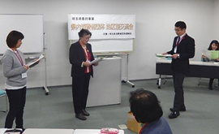
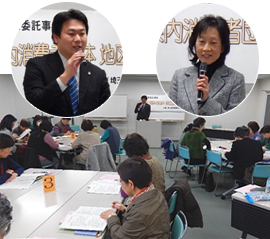

|
|
同じ地域で活動する消費者団体どうしの相互理解推進と課題の共有化、日常の取り組みの意見交換・情報交換、市町村の消費者行政の充実につながるきっかけづくりを目的に、埼玉県の委託事業として開催しています。 1月26日(火)13時30分より、熊谷市の熊谷市男女共同参画推進センターハートピア会議室1・2にて開催され、8団体21人が参加しました。
1．学習会『見て、考えて、消費者保護の法律について学びましょう』  弁護士の猪原英和さんを講師に、寸劇を交えた参加型の学習会を行いました。はじめに、身近な消費者被害の事例をもとにした寸劇(高齢者に対する送り付け商法)を参加者にも加わっていただき披露し、それを受けて各グループで商品を解約返品する解決方法を考えました。 その後、猪原さんから、寸劇事例の解説と、インターネット取引被害の現状、それに対する民法と消費者保護法による解決策を中心にお話をいただきました。被害を防ぐために大切なこととして｢行政だけでなく地域ネットワークによる活動の広がりが大切です｣と参加者に向かって呼びかけました。 2．事例報告『消費生活相談員から聞く「消費者被害」最新情報』 埼玉県消費生活コンサルタントの会の橋場幸代さんを講師に、消費者被害の最新事例について学びました。埼玉県内の消費者被害の現状や、公的機関を名乗る詐欺、架空･不当請求、ネット通販、通信契約等、特に相談が多い事例とその対処法について報告をいただきました。また、今後注意しなければいけない事項として、川越会場でも指摘のあった電力小売自由化にともなう勧誘があがりました。 3．交流会・2015年度消費生活関連事業調査結果報告 休憩後、2つのグループに分かれて、学習会・事例報告を受けての意見交換、日常の活動に関する交流を行いました。テーブル報告では｢産業廃棄物となった食品が流通された件は許せない。でも大元をたどれば、食品が大量に廃棄されている問題につながる。消費者として賞味期限・消費期限の違いを理解する取り組みや、フードバンクの取り組みなどに関わる必要がある｣などの発言がありました。その後、埼玉消団連の今野さんより、2015年度消費生活関連事業調査結果について報告がありました。 |